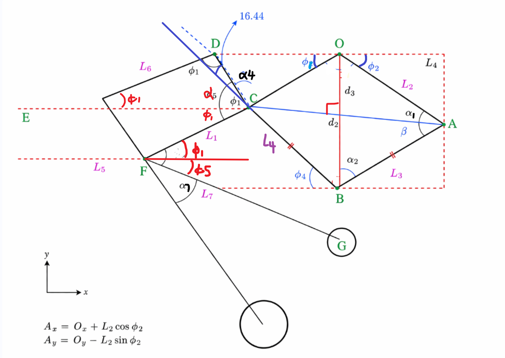
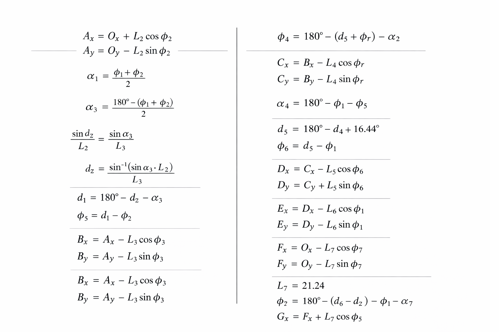

  <style>
    .fk-tab-scope {
      font-family: inherit;
      background: transparent;
      margin: 0;
      padding: 0;
      color: inherit;
    }

    .fk-tab-scope .report-wrapper {
      max-width: 100%;
      margin: 0;
      padding: 0;
    }

    .fk-tab-scope .section-card {
      background: transparent;
      border-radius: 0;
      padding: 0;
      margin: 0;
      box-shadow: none;
    }

    .fk-tab-scope .section-title,
    .fk-tab-scope .subsection-title {
      position: relative;
      line-height: 1.5;
    }

    .fk-tab-scope .section-title {
      font-size: 20pt;
      font-weight: bold;
      margin: 0 0 12px 0;
      padding-top: 26px;
    }

    .fk-tab-scope .subsection-title {
      font-size: 16pt;
      font-weight: bold;
      margin: 26px 0 10px 0;
      padding-top: 26px;
    }

    .fk-tab-scope .section-title::before,
    .fk-tab-scope .subsection-title::before {
      display: none;
    }

    .fk-tab-scope p {
      margin: 0 0 12px 0;
      line-height: 1.65;
    }

    .h-row {
      --h1-width: 600px;
      --h2-width: 1000px;
      display: grid;
      grid-template-columns: 1fr;
      gap: 10px;
      margin: 10px 0 8px 0;
      text-align: center;
      font-weight: 700;
      color: #2f3740;
      justify-items: center;
    }

    .h-row-bottom {
      display: flex;
      justify-content: center;
      align-items: start;
      gap: 10px;
      width: min(100%, 1040px);
    }

    .h-cell {
      padding: 6px 8px;
      border: 1px solid rgba(0, 0, 0, 0.15);
      border-radius: 6px;
      background: rgba(255, 255, 255, 0.85);
    }

    .h-cell img {
      width: 100%;
      max-width: 280px;
      height: auto;
      display: block;
      margin: 0 auto;
      border-radius: 4px;
    }

    #h1-img { max-width: var(--h1-width); }
    #h2-img { max-width: var(--h2-width); }

    .fk-tab-scope code {
      font-family: Consolas, "Courier New", monospace;
      font-size: 0.95em;
    }

    .fk-tab-scope details.expand-box {
      margin: 8px 0 0 0;
      padding: 14px 16px;
      border-radius: 8px;
      background: rgba(230, 236, 255, 0.55);
      border: 1px solid rgba(140, 160, 220, 0.3);
      transition: 0.25s ease;
    }

    .fk-tab-scope details.expand-box[open] {
      background: rgba(210, 220, 255, 0.65);
      border-color: rgba(90, 110, 200, 0.45);
    }

    .fk-tab-scope details.expand-box summary {
      cursor: pointer;
      list-style: none;
      display: flex;
      align-items: center;
      margin: 0;
      padding: 0;
      font-weight: bold;
      margin-bottom: 6px;
    }

    .fk-tab-scope details.expand-box summary::-webkit-details-marker {
      display: none;
    }

    .fk-tab-scope details.expand-box summary::marker {
      content: "";
    }

    .fk-tab-scope details.expand-box summary::before {
      content: "▶";
      font-size: 11pt;
      margin-right: 6px;
      transition: transform 0.2s ease;
    }

    .fk-tab-scope details.expand-box[open] summary::before {
      content: "▼";
    }

    .fk-tab-scope .expand-body {
      padding-top: 8px;
    }

    .page-intro-title {
      font-size: 18pt;
      font-weight: 700;
      margin: 0 0 8px 0;
      color: #1f2833;
    }

    .page-intro {
      margin: 0 0 14px 0;
      line-height: 1.7;
      color: #2d3640;
    }

    .intro-video {
      width: min(100%, 720px);
      height: auto;
      display: block;
      margin: 0 0 14px 0;
      border-radius: 8px;
      border: 1px solid rgba(0,0,0,0.14);
      box-shadow: 0 4px 12px rgba(0,0,0,0.12);
      background: #000;
    }

    .fk-tab-scope .matlab-link {
      color: #0b3d91;
      text-decoration: underline;
      text-underline-offset: 2px;
      cursor: pointer;
      font-weight: 600;
    }

    .code-modal {
      position: fixed;
      inset: 0;
      background: rgba(0, 0, 0, 0.45);
      display: none;
      align-items: center;
      justify-content: center;
      z-index: 9999;
      padding: 20px;
    }

    .code-modal.open {
      display: flex;
    }

    .code-modal-box {
      width: min(980px, 96vw);
      max-height: 88vh;
      background: #fff;
      border-radius: 10px;
      border: 1px solid rgba(0, 0, 0, 0.15);
      box-shadow: 0 12px 30px rgba(0, 0, 0, 0.25);
      display: flex;
      flex-direction: column;
      overflow: hidden;
    }

    .code-modal-head {
      display: flex;
      justify-content: space-between;
      align-items: center;
      padding: 10px 14px;
      border-bottom: 1px solid rgba(0, 0, 0, 0.1);
      background: #f6f8fc;
    }

    .code-modal-title {
      font-weight: 700;
      font-size: 12pt;
    }

    .code-close-btn {
      border: 1px solid rgba(0, 0, 0, 0.18);
      background: #fff;
      border-radius: 6px;
      padding: 4px 10px;
      cursor: pointer;
      font-family: inherit;
    }

    .code-modal pre {
      margin: 0;
      padding: 14px;
      background: #111827 !important;
      color: #e5e7eb !important;
      overflow: auto;
      font-family: Consolas, "Courier New", monospace !important;
      font-size: 10.5pt;
      line-height: 1.45;
      white-space: pre;
      max-height: 78vh;
    }
  </style>
<section class="fk-tab-scope" id="sec-forward-kinematics-tab">
  <div class="report-wrapper">
    <section class="section-card">
      <h2 class="page-intro-title">4.1 Kinematic Modelling Overview</h2>
      <video class="intro-video" controls autoplay muted playsinline loop preload="metadata">
        <source src="videos_2/FK_Validation_video.mp4" type="video/mp4">
        Your browser does not support the video tag.
      </video>
      <p class="page-intro">
        This page consolidates the forward and inverse kinematic modelling workflow in expandable sections.
        The first tab presents the geometric forward map from joint-space inputs to Cartesian output location,
        while the second tab documents the constrained inverse reconstruction used to recover joint angles from a target end-point.
      </p>

      <details class="expand-box" id="fk-tab" data-keep-open="true" open>
        <summary><strong>4.1.1 Forward Kinematics</strong></summary>
        <div class="expand-body">
          <p>
            This section presents the MatLab Version of Forward Kinematics which will later be integrated into the firmware.
            The implementation is based on the geometric construction outlined in the function
            <code>FK_G_from_phi1phi2</code> in
            <a href="#" class="matlab-link" data-file="VMC_WN_FK_Ainimation.m">VMC_WN_FK_Ainimation.m</a>.
            The mechanism is modeled as a planar
            linkage with inputs $\phi_1$ and $\phi_2$, and output point $\mathbf{G}$.
          </p>

          
          <div class="h-row">
            <div class="h-cell"></div>
            <div class="h-row-bottom">
              <div class="h-cell"></div>
            
            </div>
          </div>
          <p>
            Forward kinematics was first derived by hand and later transferred to MATLAB for verification.
            The variables $\phi_1$ and $\phi_2$ are the two motor-driven joint angles after chain and gearbox ratio conversion.
            In this report, symbols of the form $\phi$ denote absolute angles referenced to the global horizontal axis,
            while symbols of the form $\theta$ denote relative inter-link or inter-joint angles.
          </p>

          <h3 class="subsection-title">4.1.1.1 Angle Wrapping and Inputs</h3>
          <p>To ensure angular consistency, all angles are wrapped to $(-180^\circ, 180^\circ]$:</p>
          \[
          \mathcal{W}(\alpha) = \operatorname{mod}(\alpha + 180,\, 360) - 180.
          \]
          \[
          \phi_1 \leftarrow \mathcal{W}(\phi_1), \qquad
          \phi_2 \leftarrow \mathcal{W}(\phi_2).
          \]
          <p>
            Trigonometric operations are evaluated in degrees, consistent with MATLAB
            <code>sind</code>, <code>cosd</code>, and <code>asind</code>.
          </p>

          <h3 class="subsection-title">4.1.1.2 Intermediate Geometric Angles</h3>
          \[
          a_1 = \mathcal{W}\!\left(\frac{\phi_1 + \phi_2}{2}\right), \qquad
          a_3 = \mathcal{W}\!\left(\frac{180 - (\phi_1 + \phi_2)}{2}\right).
          \]
          \[
          x = \operatorname{sat}_{[-1,1]}\!\left(\frac{L_2}{L_3}\sin(a_3)\right), \qquad
          a_2 = \mathcal{W}\!\left(\sin^{-1}(x)\right).
          \]
          \[
          \phi_4 = \mathcal{W}(a_3 + \phi_2 - a_2), \qquad
          \phi_3 = \mathcal{W}(180 - a_2 - a_3 - \phi_2).
          \]
          \[
          a_4 = \mathcal{W}(180 - \phi_1 - \phi_4), \qquad
          a_5 = \mathcal{W}(180 - a_4 + k_{a5}), \qquad
          a_6 = \mathcal{W}(a_5 - \phi_1).
          \]

          <h3 class="subsection-title">4.1.1.3 Point-Wise Forward Kinematic Chain</h3>
          \[
          \mathbf{O} =
          \begin{bmatrix}
          0\\0
          \end{bmatrix},
          \qquad
          \mathbf{A} = \mathbf{O} +
          \begin{bmatrix}
          L_2\cos\phi_2\\
          -L_2\sin\phi_2
          \end{bmatrix}.
          \]
          \[
          \mathbf{B} = \mathbf{A} +
          \begin{bmatrix}
          -L_3\cos\phi_3\\
          -L_3\sin\phi_3
          \end{bmatrix},
          \qquad
          \mathbf{C} = \mathbf{B} +
          \begin{bmatrix}
          -L_4\cos\phi_4\\
          \;\;L_4\sin\phi_4
          \end{bmatrix}.
          \]
          \[
          \mathbf{D} = \mathbf{C} +
          \begin{bmatrix}
          -L_5\cos a_6\\
          \;\;L_5\sin a_6
          \end{bmatrix},
          \qquad
          \mathbf{E} = \mathbf{D} +
          \begin{bmatrix}
          -L_6\cos\phi_1\\
          -L_6\sin\phi_1
          \end{bmatrix}.
          \]
          \[
          \mathbf{F} = \mathbf{O} +
          \begin{bmatrix}
          -L_1\cos\phi_1\\
          -L_1\sin\phi_1
          \end{bmatrix}.
          \]

          <h3 class="subsection-title">4.1.1.4 Output Orientation and End-Point</h3>
          \[
          \phi_5 =
          \mathcal{W}\!\Big(
          k_{163}
          -\big(180-(\phi_1+a_6)\big)
          -\phi_1
          -a_7
          \Big),
          \]
          \[
          \mathbf{G} = \mathbf{F} +
          \begin{bmatrix}
          L_7\cos\phi_5\\
          -L_7\sin\phi_5
          \end{bmatrix}.
          \]
          <p>
            So, the forward kinematic map is
            \[
            (\phi_1,\phi_2)\mapsto \mathbf{G}(\phi_1,\phi_2),
            \]
            with intermediate points
            $\mathbf{O},\mathbf{A},\mathbf{B},\mathbf{C},\mathbf{D},\mathbf{E},\mathbf{F}$
            recovered simultaneously.
          </p>
        </div>
      </details>

      <details class="expand-box" id="ik-tab">
        <summary><strong>4.1.2 Inverse Kinematics</strong></summary>
        <div class="expand-body">
          <p>
            The inverse-kinematic module solves for the input angles
            $(\phi_1,\phi_2)$ such that the forward-kinematic output
            $\mathbf{G}(\phi_1,\phi_2)$ matches a desired target point
            $\mathbf{G}_{\mathrm{des}}=[G_x^{\mathrm{des}},G_y^{\mathrm{des}}]^\top$.
            The implementation follows <code>IK_phi1phi2_from_G</code> in
            <a href="#" class="matlab-link" data-file="VMC_WN_Cleaned_IK_Function.m">VMC_WN_Cleaned_IK_Function.m</a>.
          </p>

          <h3 class="subsection-title">4.1.2.1 State, Target, and Constraints</h3>
          <p>
            The optimization variable is the joint-angle vector
          </p>
          \[
          \boldsymbol{\phi}
          =
          \begin{bmatrix}
          \phi_1\\
          \phi_2
          \end{bmatrix},
          \]
          <p>
            and the task-space target is
          </p>
          \[
          \mathbf{G}_{\mathrm{des}}
          =
          \begin{bmatrix}
          G_x^{\mathrm{des}}\\
          G_y^{\mathrm{des}}
          \end{bmatrix}.
          \]
          <p>
            In the current code, the target is set as
            $\mathbf{G}_{\mathrm{des}}=[41.56,\,-292.4]^\top$ mm,
            with box constraints
            \[
            \boldsymbol{\phi}_{\mathrm{lb}}=[0,\;0]^\top,\qquad
            \boldsymbol{\phi}_{\mathrm{ub}}=[140,\;140]^\top \text{ (deg)}.
            \]
          </p>

          <h3 class="subsection-title">4.1.2.2 Problem Formulation</h3>
          <p>
            Define the residual vector using the forward map:
          </p>
          \[
          \mathbf{e}(\phi_1,\phi_2)
          =
          \mathbf{G}(\phi_1,\phi_2)-\mathbf{G}_{\mathrm{des}}
          =
          \begin{bmatrix}
          G_x(\phi_1,\phi_2)-G_x^{\mathrm{des}}\\
          G_y(\phi_1,\phi_2)-G_y^{\mathrm{des}}
          \end{bmatrix}.
          \]
          <p>
            The bounded nonlinear least-squares objective is
          </p>
          \[
          \min_{\phi_1,\phi_2}
          \; J(\phi_1,\phi_2)
          =\frac{1}{2}\left\|\mathbf{e}(\phi_1,\phi_2)\right\|_2^2
          \]
          subject to
          \[
          \boldsymbol{\phi}_{\mathrm{lb}}
          \le
          \begin{bmatrix}\phi_1\\\phi_2\end{bmatrix}
          \le
          \boldsymbol{\phi}_{\mathrm{ub}}.
          \]
          <p>
            This objective directly minimizes Cartesian end-point mismatch in millimeters.
          </p>

          <h3 class="subsection-title">4.1.2.3 Numerical Solver Used in Code</h3>
          <p>
            In MATLAB, the solution is obtained via
            <code>lsqnonlin</code>:
          </p>
          \[
          \begin{bmatrix}\phi_1^\star\\\phi_2^\star\end{bmatrix}
          =
          \operatorname{lsqnonlin}
          \!\left(
          \mathbf{e}(\phi_1,\phi_2),\;
          \boldsymbol{\phi}_0,\;
          \boldsymbol{\phi}_{\mathrm{lb}},\;
          \boldsymbol{\phi}_{\mathrm{ub}}
          \right).
          \]
          <p>
            The initial guess is first limited to the allowed range:
          </p>
          \[
          \boldsymbol{\phi}_0 \leftarrow
          \min\!\big(\boldsymbol{\phi}_{\mathrm{ub}},
          \max(\boldsymbol{\phi}_{\mathrm{lb}},\boldsymbol{\phi}_0)\big).
          \]
          <p>
            Solver options used in the script are:
            \[
            \texttt{MaxFunctionEvaluations}=8000,\;
            \texttt{MaxIterations}=300,\;
            \texttt{FunctionTolerance}=10^{-12},\;
            \texttt{StepTolerance}=10^{-12}.
            \]
          </p>
          <p>
            After optimization, each angle is normalized by
          </p>
          \[
          \mathcal{W}(\alpha)=\operatorname{mod}(\alpha+180,360)-180,
          \qquad
          \phi_i^\star \leftarrow \mathcal{W}(\phi_i^\star),\; i\in\{1,2\}.
          \]
          <p>
            The reported solution quality is computed from
            \[
            \mathbf{G}_{\mathrm{err}}=
            \mathbf{G}(\phi_1^\star,\phi_2^\star)-\mathbf{G}_{\mathrm{des}},
            \qquad
            \|\mathbf{G}_{\mathrm{err}}\|_2.
            \]
          </p>

          <h3 class="subsection-title">4.1.2.4 Multi-Start Search</h3>
          <p>
            A grid of initial guesses
            $\boldsymbol{\phi}_0^{(m,n)}=[\phi_{1,m},\phi_{2,n}]^\top$
            is evaluated, and the minimum terminal error is selected:
          </p>
          \[
          (\phi_1^\dagger,\phi_2^\dagger)
          =
          \arg\min_{m,n}
          \left\|
          \mathbf{G}\!\left(\phi_{1,m}^\star,\phi_{2,n}^\star\right)
          -\mathbf{G}_{\mathrm{des}}
          \right\|_2.
          \]
          <p>
            In implementation, each axis is sampled with 7 points over the allowed range, giving
            $7\times7=49$ starting pairs. The candidate with minimum terminal task-space error is retained.
          </p>
          <p>
            This strategy improves stability against local minima and reduces sensitivity to one poor initial guess.
          </p>

          <h3 class="subsection-title">4.1.2.5 Practical Interpretation</h3>
          <p>
            The IK routine enforces physically admissible joint ranges while solving directly in Cartesian space.
            Because the mechanism is nonlinear, multiple joint configurations may produce nearby end-point locations.
            The bounded least-squares + multi-start structure provides a stable and implementation-ready
            inverse map for later control and firmware integration.
          </p>
        </div>
      </details>

      <details class="expand-box" id="jacobian-tab">
        <summary><strong>4.1.3 Jacobian Torque Mapping</strong></summary>
        <div class="expand-body">
          <p>
            This section explains the Jacobian-based kinematic and force transmission framework implemented in
            <a href="#" class="matlab-link" data-file="VMC_WN_Jacobian_Transformation.m">VMC_WN_Jacobian_Transformation.m</a>
            and
            <a href="#" class="matlab-link" data-file="VMC_WN_Jacobian_Transformation_Animation.m">VMC_WN_Jacobian_Transformation_Animation.m</a>.
            The model uses two actuated inputs
            $(\phi_1,\phi_2)$ and a planar output point
            \[
            \mathbf{G}=\begin{bmatrix}x\\y\end{bmatrix}.
            \]
          </p>

          <h3 class="subsection-title">4.1.3.1 Role of the Jacobian</h3>
          <p>
            The instantaneous velocity relation is
            \[
            \dot{\mathbf{G}}=
            \begin{bmatrix}\dot{x}\\\dot{y}\end{bmatrix}
            =
            J(\mathbf{q})
            \begin{bmatrix}\dot{\phi}_1\\\dot{\phi}_2\end{bmatrix},
            \qquad
            \mathbf{q}=\begin{bmatrix}\phi_1\\\phi_2\end{bmatrix}.
            \]
            So joint angular velocities map directly to end-point linear velocity.
            Physically, the Jacobian is the local transmission operator between actuator space and Cartesian space.
          </p>

          <h3 class="subsection-title">4.1.3.2 Physical Meaning of the Matrix Columns</h3>
          <p>
            For the 2D, 2-DOF system:
          </p>
          \[
          J=
          \begin{bmatrix}
          \dfrac{\partial x}{\partial \phi_1} & \dfrac{\partial x}{\partial \phi_2}\\
          \dfrac{\partial y}{\partial \phi_1} & \dfrac{\partial y}{\partial \phi_2}
          \end{bmatrix}.
          \]
          <p>
            Column 1 represents the velocity of $\mathbf{G}$ caused by unit speed at joint 1
            with joint 2 fixed; column 2 represents the same for joint 2.
            This is exactly how the code visualizes Jacobian vectors at point $G$.
          </p>

          <h3 class="subsection-title">4.1.3.3 Numerical Jacobian Used in MATLAB</h3>
          <p>
            The implementation computes $J$ numerically via central differences in degrees
            with step $h=10^{-3}$:
          </p>
          \[
          \frac{\partial \mathbf{G}}{\partial \phi_1}\Big|_{\deg}
          \approx
          \frac{\mathbf{G}(\phi_1+h,\phi_2)-\mathbf{G}(\phi_1-h,\phi_2)}{2h},
          \]
          \[
          \frac{\partial \mathbf{G}}{\partial \phi_2}\Big|_{\deg}
          \approx
          \frac{\mathbf{G}(\phi_1,\phi_2+h)-\mathbf{G}(\phi_1,\phi_2-h)}{2h}.
          \]
          \[
          J_{\deg}=\left[\frac{\partial \mathbf{G}}{\partial \phi_1}\;\;\frac{\partial \mathbf{G}}{\partial \phi_2}\right]_{\deg},
          \qquad
          J_{\mathrm{rad}}=J_{\deg}\left(\frac{180}{\pi}\right).
          \]
          <p>
            So $J_{\deg}$ is in mm/deg and $J_{\mathrm{rad}}$ is in mm/rad.
          </p>

          <h3 class="subsection-title">4.1.3.4 Velocity and Acceleration Mapping</h3>
          <p>
            Velocity kinematics:
          </p>
          \[
          \dot{\mathbf{G}}=J_{\mathrm{rad}}(\mathbf{q})\,\dot{\mathbf{q}}.
          \]
          <p>
            The code verifies this numerically by finite-difference velocity:
          </p>
          \[
          \dot{\mathbf{G}}_{\mathrm{FD}}
          \approx
          \frac{\mathbf{G}(t+\Delta t)-\mathbf{G}(t)}{\Delta t}.
          \]
          <p>
            Acceleration kinematics:
          </p>
          \[
          \ddot{\mathbf{G}}
          =
          J_{\mathrm{rad}}(\mathbf{q})\,\ddot{\mathbf{q}}
          +
          \dot{J}_{\mathrm{rad}}(\mathbf{q},\dot{\mathbf{q}})\,\dot{\mathbf{q}}.
          \]
          <p>
            A corresponding finite-difference estimate is
          </p>
          \[
          \ddot{\mathbf{G}}_{\mathrm{FD}}
          \approx
          \frac{\mathbf{G}(t+\Delta t)-2\mathbf{G}(t)+\mathbf{G}(t-\Delta t)}{\Delta t^2}.
          \]

          <h3 class="subsection-title">4.1.3.5 Jacobian Transpose Torque Mapping</h3>
          <p>
            For end-point force $\mathbf{F}=[F_x,F_y]^\top$ (same global frame as FK), the required joint torques are:
          </p>
          \[
          \boldsymbol{\tau}
          =
          J_{\mathrm{rad}}^\top(\mathbf{q})\,\mathbf{F}.
          \]
          <p>
            This follows from power/virtual-work consistency:
          </p>
          \[
          \boldsymbol{\tau}^\top\dot{\mathbf{q}}
          =
          \mathbf{F}^\top\dot{\mathbf{G}}
          =
          \mathbf{F}^\top J\dot{\mathbf{q}}
          \;\Rightarrow\;
          \boldsymbol{\tau}=J^\top\mathbf{F}.
          \]
          <p>
            In the current script, torque is obtained in N$\cdot$mm and converted by:
            \[
            \boldsymbol{\tau}_{\mathrm{N\cdot m}}=\frac{\boldsymbol{\tau}_{\mathrm{N\cdot mm}}}{1000}.
            \]
          </p>

          <h3 class="subsection-title">4.1.3.6 Interpretation of Force-Direction Sweep in Code</h3>
          <p>
            The script sweeps unit-force direction
            $\theta_F\in[-180^\circ,180^\circ]$:
          </p>
          \[
          F_x=\cos\theta_F,\qquad F_y=\sin\theta_F,\qquad \|\mathbf{F}\|_2=1,
          \]
          \[
          \boldsymbol{\tau}(\theta_F)=J^\top\mathbf{F}(\theta_F).
          \]
          <p>
            It then plots $\|\boldsymbol{\tau}\|$, $|\tau_1|$, and $|\tau_2|$ versus force direction.
            Peaks indicate poor mechanical leverage directions requiring large motor torque.
          </p>

          <h3 class="subsection-title">4.1.3.7 Singularity and Manipulability</h3>
          <p>
            The velocity ellipse is generated by
            \[
            \dot{\mathbf{G}}=J_{\mathrm{rad}}\dot{\mathbf{q}},\qquad \|\dot{\mathbf{q}}\|_2=1.
            \]
            A scalar indicator used in the script is
            \[
            w=\left|\det\!\left(J_{\mathrm{rad}}\right)\right|.
            \]
            Small $w$ corresponds to near-singular behavior: motion capability collapses in one direction and
            torque demand spikes for certain Cartesian force directions.
          </p>

          <h3 class="subsection-title">4.1.3.8 Control Relevance</h3>
          <p>
            In virtual-model or force-based control, a desired Cartesian force
            $\mathbf{F}_{\mathrm{des}}$ is first generated from task objectives
            (e.g., support, compliance, or disturbance rejection), then mapped to actuator commands by
            \[
            \boldsymbol{\tau}_{\mathrm{des}}=J^\top\mathbf{F}_{\mathrm{des}}.
            \]
            Thus, Jacobian transpose mapping is the key bridge between endpoint force objectives and motor torque actuation.
          </p>
        </div>
      </details>
    </section>
  </div>
  <div id="code-modal" class="code-modal" aria-hidden="true">
    <div class="code-modal-box">
      <div class="code-modal-head">
        <div id="code-modal-title" class="code-modal-title">MATLAB File</div>
        <button id="code-close-btn" class="code-close-btn" type="button">Close</button>
      </div>
      <pre><code id="code-modal-content" class="language-matlab">Loading...</code></pre>
    </div>
  </div>
  <script>
  (function () {
      const root = document.getElementById("sec-forward-kinematics-tab");
      if (!root) return;

      const tabs = root.querySelectorAll("details.expand-box");
      if (!tabs.length) return;

      async function typesetMath(target, retries = 60) {
        if (!(window.MathJax && typeof window.MathJax.typesetPromise === "function")) {
          if (retries > 0) {
            setTimeout(() => typesetMath(target, retries - 1), 250);
          }
          return;
        }
        try {
          if (window.MathJax.startup && window.MathJax.startup.promise) {
            await window.MathJax.startup.promise;
          }
          await window.MathJax.typesetPromise(target ? [target] : [root]);
        } catch (e) {
          console.warn("MathJax typeset failed:", e);
        }
      }

      tabs.forEach((tab) => {
        tab.addEventListener("toggle", () => {
          if (tab.open) typesetMath(tab);
        });
      });

      // Initial render for default-open tab content
      typesetMath(root);
      setTimeout(() => typesetMath(root, 20), 700);
      window.addEventListener("load", () => typesetMath(root, 20), { once: true });

      const modal = root.querySelector("#code-modal");
      const modalTitle = root.querySelector("#code-modal-title");
      const modalContent = root.querySelector("#code-modal-content");
      const closeBtn = root.querySelector("#code-close-btn");
      const links = root.querySelectorAll(".matlab-link[data-file]");

      async function openCode(fileName) {
        modal.classList.add("open");
        modal.setAttribute("aria-hidden", "false");
        modalTitle.textContent = fileName;
        modalContent.textContent = "Loading...";
        try {
          const candidates = ["MatLab_Files/" + fileName, "Second_Half/MatLab_Files/" + fileName];
          let loaded = false;
          for (const url of candidates) {
            const resp = await fetch(url);
            if (resp.ok) {
              modalContent.textContent = await resp.text();
              if (window.Prism && typeof window.Prism.highlightElement === "function") {
                window.Prism.highlightElement(modalContent);
              }
              loaded = true;
              break;
            }
          }
          if (!loaded) throw new Error("File not found in MatLab_Files");
        } catch (err) {
          modalContent.textContent = "Failed to load " + fileName + "\\n" + err;
        }
      }

      function closeCode() {
        modal.classList.remove("open");
        modal.setAttribute("aria-hidden", "true");
      }

      links.forEach((a) => {
        a.addEventListener("click", (e) => {
          e.preventDefault();
          openCode(a.getAttribute("data-file"));
        });
      });

      closeBtn.addEventListener("click", closeCode);
      modal.addEventListener("click", (e) => {
        if (e.target === modal) closeCode();
      });
      document.addEventListener("keydown", (e) => {
        if (e.key === "Escape") closeCode();
      });
    })();
  </script>
</section>
